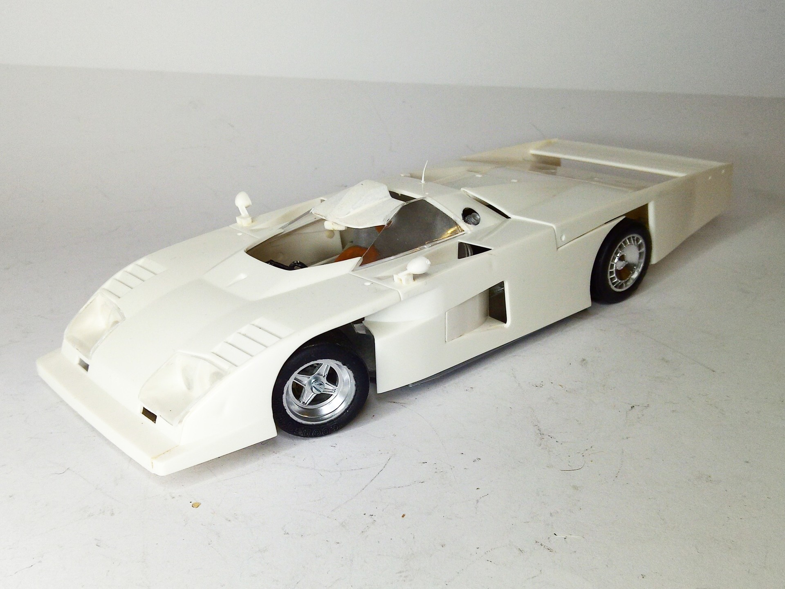
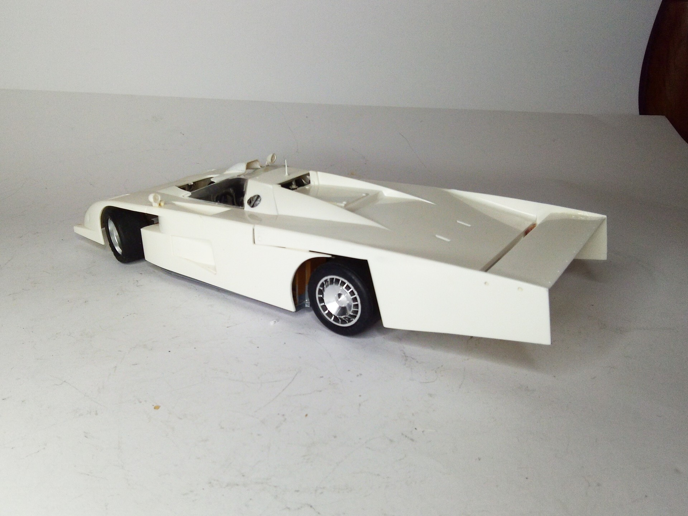

Auto e veicoli stradali · scale model archive
Dome 0 RL LeMans
Dome 0 RL LeMans — Kit: Fujimi, Scale: 1/24. Raced at LeMans in 1979 Info: https://www.carthrottle.com/post/rzokmkm/ Unfortunately, decals were missing…

Photo gallery

English description
Raced at LeMans in 1979 Info: https://www.carthrottle.com/post/rzokmkm/
Unfortunately, decals were missing from the kit box
#1724 #Fujimi
Descrizione italiana
Corse una Le Mans nel 1979 Info: https://www.autothrottle.com/post/rzokmkm/.
Purtroppo nella scatola del kit mancavano le decals.